【行者无疆 言念潇湘】行者disco
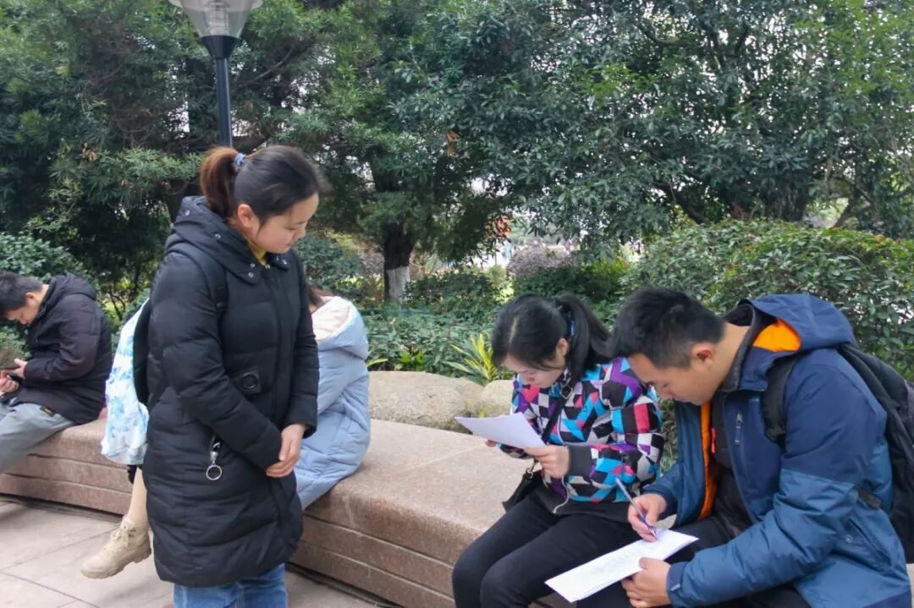
心里的话
想带你去趟长沙
探寻湖湘文化
哪管它是真是假
请你尽情欣赏
享受神秘的它
它是最迷人噶
你知道吗？
那究竟，什么是长沙呢？
#屈贾之乡#
#娱乐之都#
#四大火炉之一#
#臭豆腐#
#X颜悦色#
#没有一只小龙虾是不好吃的#
当然
作为一个正经的文化调研团队
我们调研的主要对象不局限于长沙的
臭豆腐
东安鸡
酱板鸭
以及各大娱乐节目（你懂得）
这次团队将目标聚焦于
“湖湘文化对人文精神的影响”。
长沙，既古老又时尚，是一片红色热土，更是一座文化名城。 从楚南重镇、漠藩王都到宋元勝邑、六朝临湘，长沙城历经千年风雨而城址未改，城囿广增，风姿卓然，亦有“屈贾之乡”、“楚汉名城”、“潇湘洙泗”的美誉。
✔若你想一睹沈从文笔下诗意的边城，凤凰古城必不可少。位于湖南省湘西土家族苗族自治州的西南部，绵亘逶迤于武陵山脉深处，倚山而筑，环以石墙，濒临沱江，群山环抱，河溪萦回，关隘雄奇。
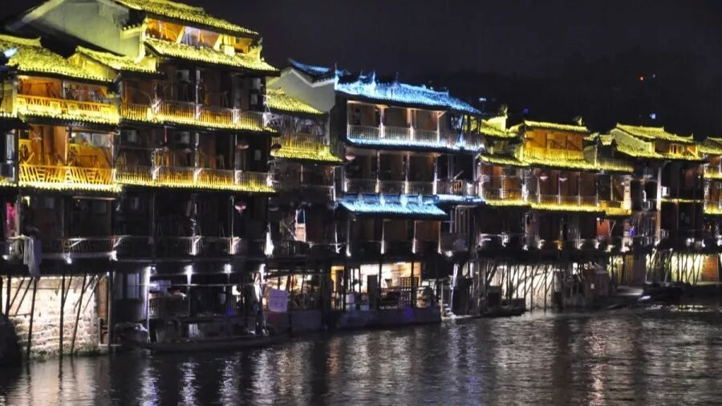
✔✔夜色中的古城，是一个不折不扣的美妙的梦境，或轻愁或薄喜，或挟一怀平和。穿过影绰人群，随便寻一处临水而设的茶肆酒吧或钻进岸边吊脚楼苗家人餐馆，一人独饮或亲朋偕欢，古城就能为你圆一个心中常驻、世间鲜有的曼妙梦境了。
✦什么样的地理环境，造就出什么样的人文习俗！
✦什么样的人文习俗，造就出什么样的历史基因！
✦什么样的历史基因，造就出什么样的地方特产！
说到长沙的特产，那当然是臭豆腐！
咳咳
来到湖南
如果不品一品湘绣
不看一场花鼓戏
又怎么能甘心呢？
✔✔✔湘绣是起源于湖南的民间刺绣，以中国画为蓝本，融西画技法于一体，用百种阵法千色绣线，精细入微地刻画出外形内质的特点。以针为笔，以线为色，以纤素为纸，一针一线勾勒出富有江南韵味的柔情蜜意。
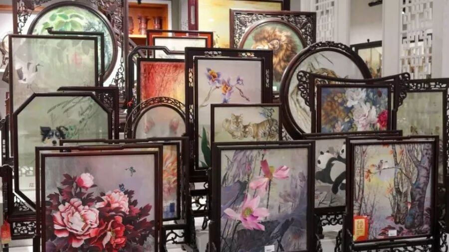
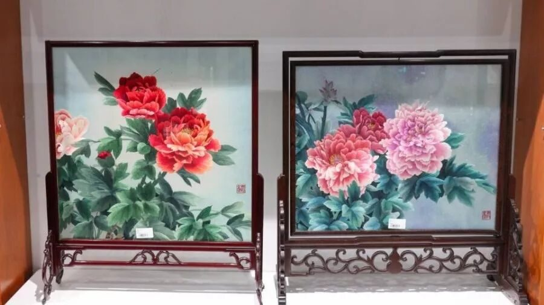
图片来源：湖南省湘绣博物馆/研究所
✔✔✔✔浓妆重彩的背后是张什么样的脸，华丽戏服里又缝着怎样的故事，花鼓戏将生活里有的，故事中讲的，聚散离合，酸甜苦辣，通通搬上舞台，编演成有声有色的曲目，道尽平凡人的悲喜忧愁。
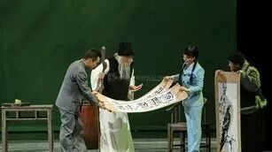
✔✔✔✔✔潇湘用它千年的文化积淀孕育了一代又一代的中华儿女，从古至今，湖南这片热土涌现出了无数仁人志士，英雄豪杰。既有中国理学的开山祖师周敦颐，也有近代文学家沈从文；既有晚清四大名臣之首曾国藩，也有中国人民的领袖毛泽东同志……

Q1:
那你们为何要选择调研
湖湘文化对人文精神的影响嘞？
★从哲学上来说，文化是智慧群族的一切群族社会现象与群族内在精神的既有，传承，创造，发展的总和。它涵括智慧群族从过去到未来的历史，是群族基于自然的基础上所有活动内容。是群族所有物质表象与精神内在的整体。总而言之，文化是相对于经济、政治而言的人类全部精神活动及其产品。
经济⇔文化⇔政治
文化
其最终必定通过人来起作用
先进的文化能激励人
落后的文化能阻碍人
★★党的十九大精神指出，作为新时代的青年，当代大学生要“有理想、有本领、有担当”，坚定理想信念，在推进新时代中国特色社会主义事业的爱国奋斗中不断实现人生理想和价值。
★★★作为中华文化的重要组成部分，湖湘文化从宋朝时开始大放光彩，又在近代激发起了无数仁人志士前赴后继，其在中国历史上的作用不可不谓突出。这是这份突出成就让我们好奇湖湘文化究竟和湖南人发生了怎样的化学反应，而湖湘文化对人文精神的影响又对新时代的文化建设有何借鉴意义，成为了我们这次调研的课题。

① : 在前期的准备过程中，我们首先采集调研地信息、合理安排实践行程；我们采取了校园调研问卷与校内采访，结合校内问卷与采访为实地调研过程中可能遇到的问题与挑战做出预案，尽量保证调研过程的效率与质量；此外，团队也开始着手采撷文化精华，宣传当地文化，期望在走进去的时候将优秀文化传出去……
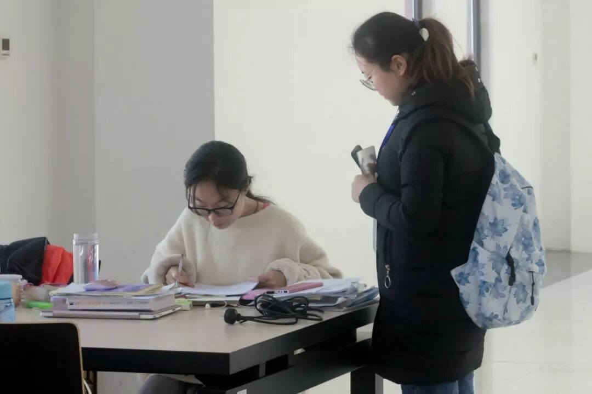
② : 在历时5天的调研过程中，团队前往了岳麓书院、湖南省博物馆、毛泽东同志纪念馆、长沙市非遗博物馆等地实地考察调研，记录湖湘文化对湖南历史上的杰出人物与普通百姓的影响；
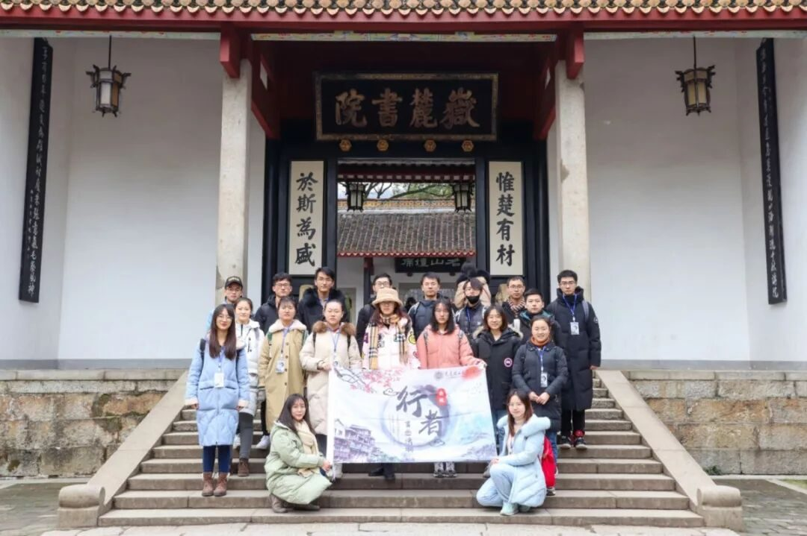
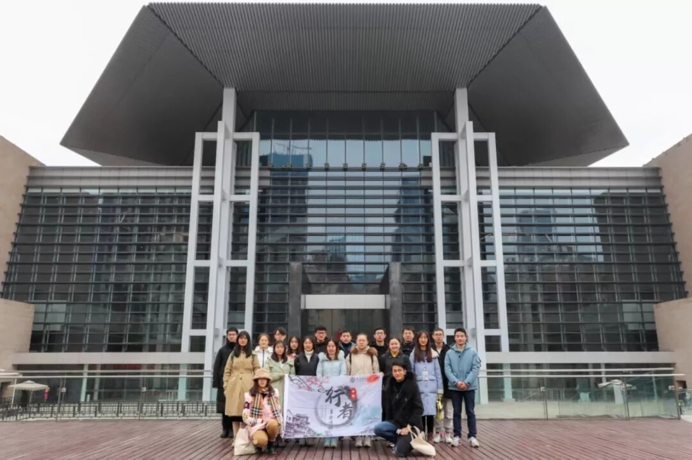
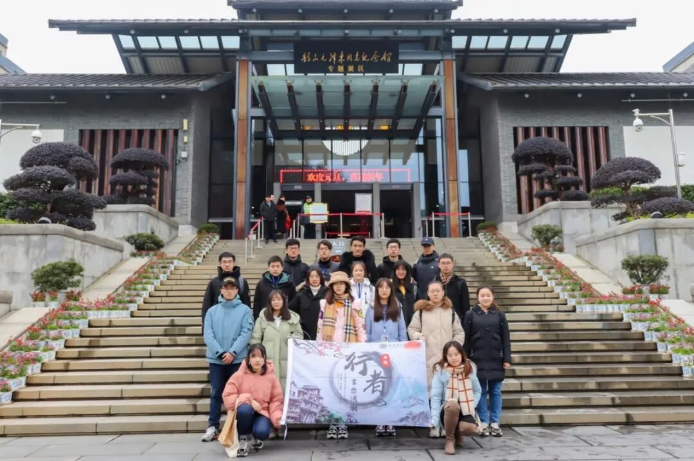
③ : 我们采访了贾谊故居、长沙简牍博物馆、刘少奇同志纪念馆、湖南湘绣研究所等地的相关负责人、非遗文化传承人以及工作人员，了解权威人士对湖湘文化对人文精神影响的理解；
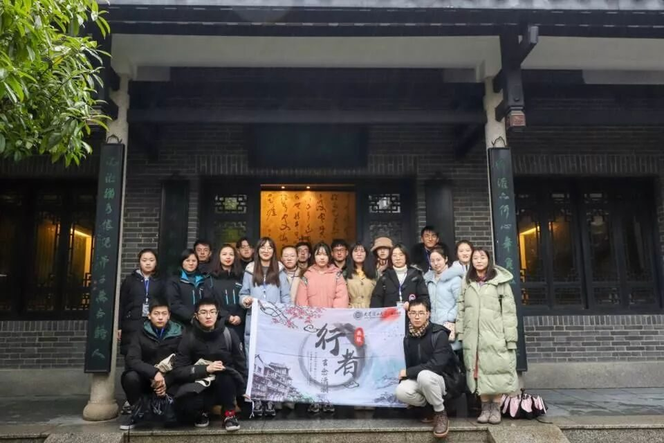

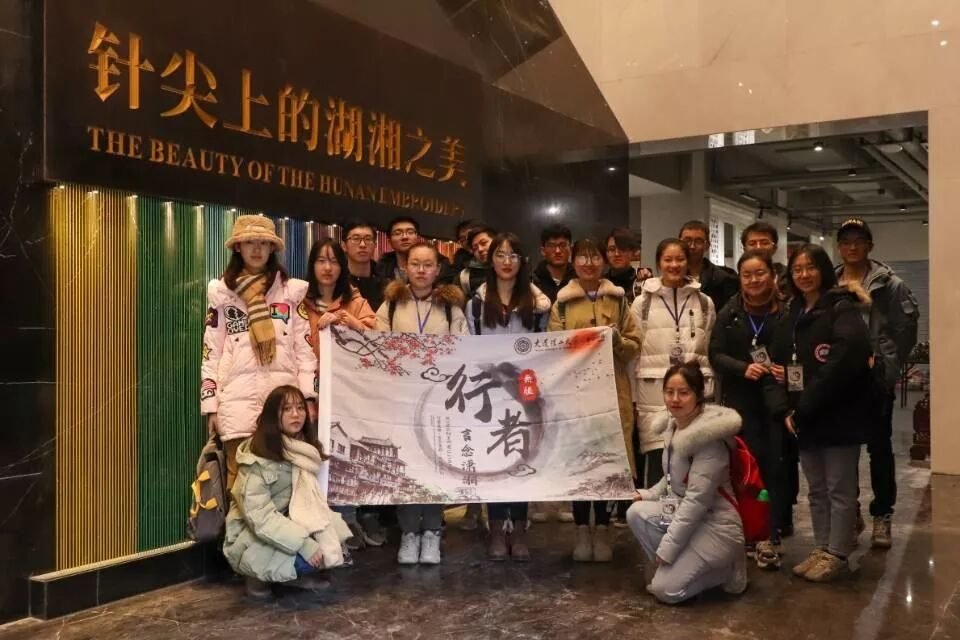
④ : 此外，我们还在太平老街、靖港古镇、橘子洲头、贾谊故居、黄兴步行街等地发放问卷与随机街访，获取当地民众对湖湘文化理解的第一手资料。
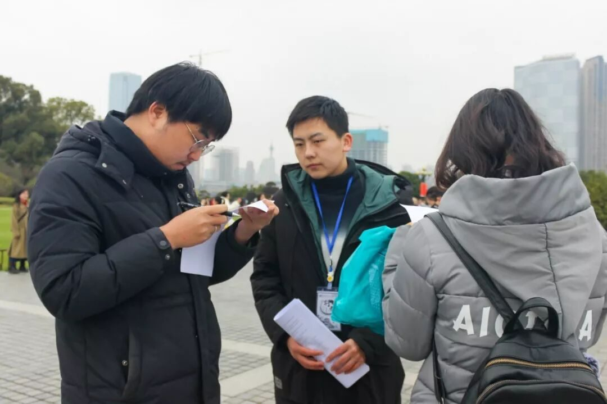
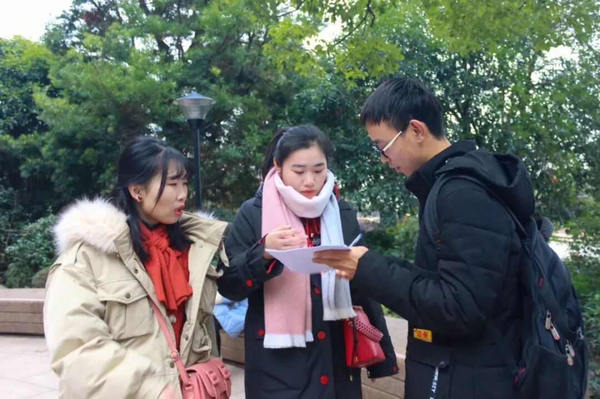
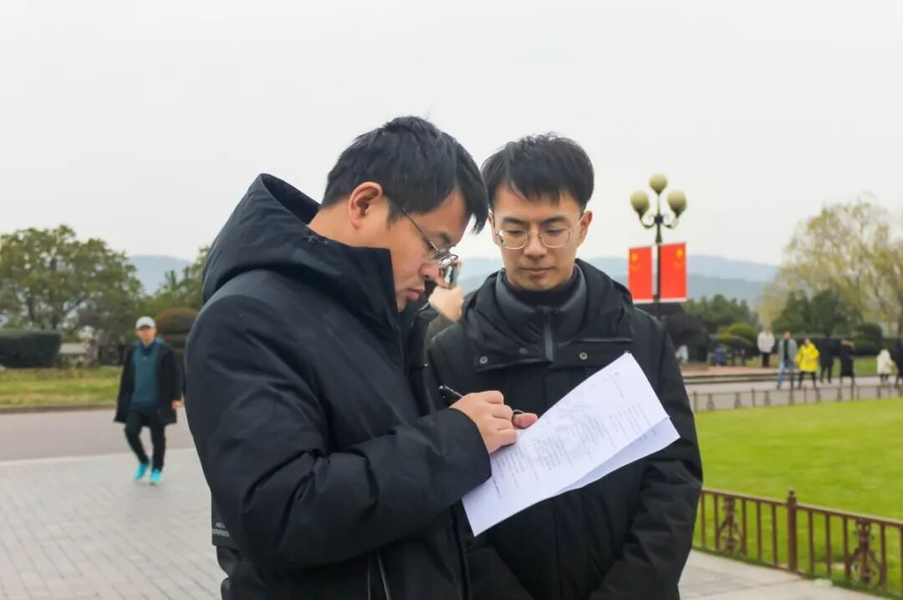
●通过三位一体的综合调研，我们希望尽自己所能全面地揭示湖湘文化对湖南人文精神的重大影响。
●调研之后，我们也将所做出的调研报告递送给部分协助我们进行调研的单位，为湖湘文化的传承发扬与中国新时代文化建设贡献自己的力量。
Q2:
所以……什么是湖湘文化？
“湖”指洞庭湖
“湘”指湘江
“湖湘”之名用来指代湖南地区的说法最早出现于唐代诗人王勃《益州德阳县善寂寺碑》中“虽复苍梧北望，湖湘盈舜后之歌。”一句。在三面环山的U形地势下，相对封闭的湖南文化自先秦的湘楚文化一脉相承，生活在这里的各族人民在漫长历史进程中形成了独具特色、相对稳定的区域文化——湖湘文化。
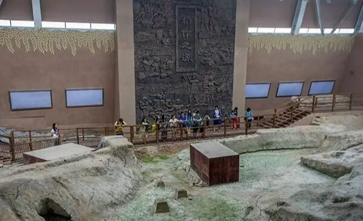
上溯至炎黄之时，湖南地区便已种植水稻。仓廪实而知礼节，湖湘文化的胚胎便在这一茬一茬的水稻中孕育着。
湖南大部分地区地势较低，气候温暖潮湿，冬日又寒冷难耐；再加上湖南地区远离古代中央政权，常为贬谪流放处，故称卑湿之地。
春秋战国之时，湖南地区隶属于楚国，这里也出现了以屈原为代表的湘楚文化。随着时间流逝，汉文帝将贾谊外放为长沙王太傅，《吊屈原赋》、《鵩鸟赋》、《过秦论》等为湖湘地区埋下了后世湖湘文化中经世致用等精神埋下了种子。汉武帝时，司马迁作《史记》，将屈原与贾谊并列作屈原贾谊列传，屈贾文化也就此在湖湘大地上确立。
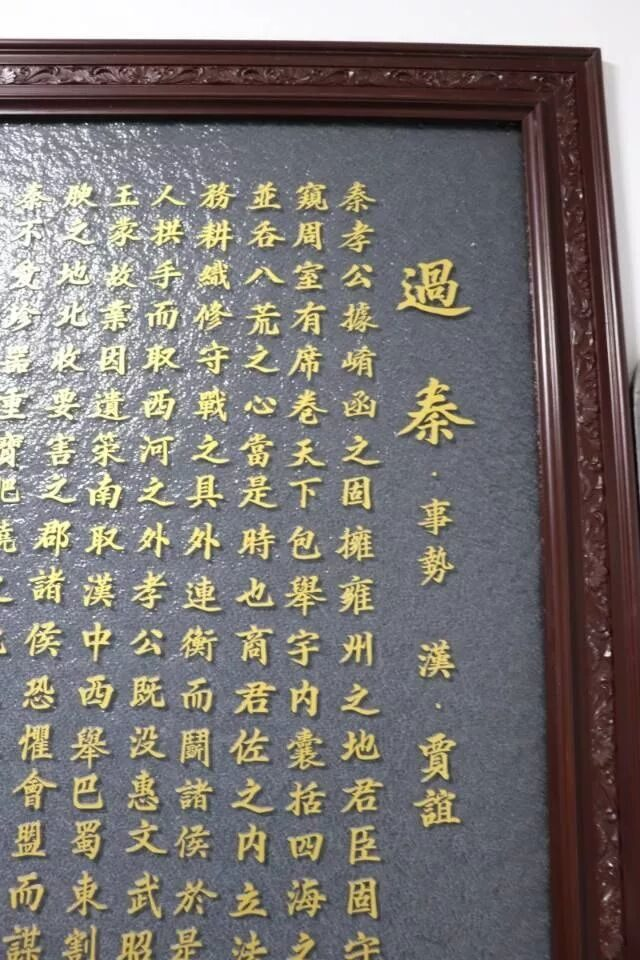
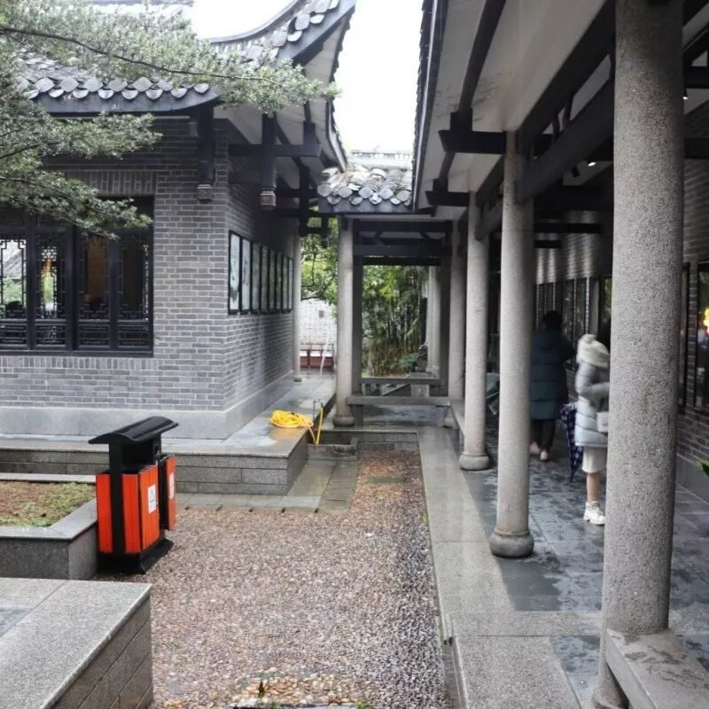
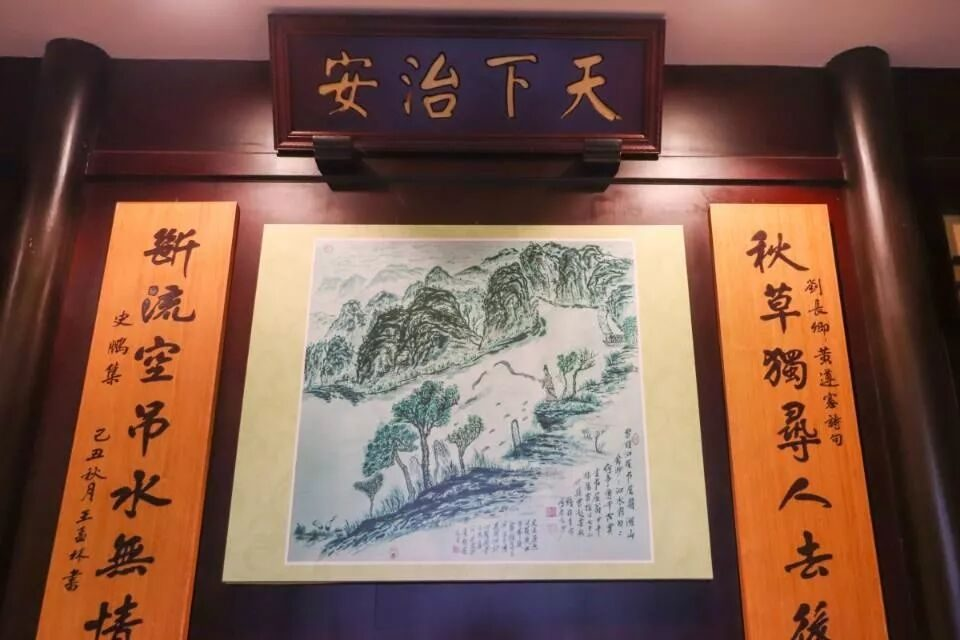
湖南北阻大湖，东南西三面环山，早期的湖南，既远离全国政治文化中心，又与经济文化发达的江浙等沿海地区少有往来，自此都是“湖南自郡县以来，曾未尝先天下”的状况。到北宋年间，潭州太守朱洞创立岳麓书院。随着朱熹、周敦颐、程颐、程颢等人在此处的讲学，宋明理学以岳麓书院为基础逐渐成为全国性的学说，湖湘文化也在中国历史上留下了难以磨灭的印记。
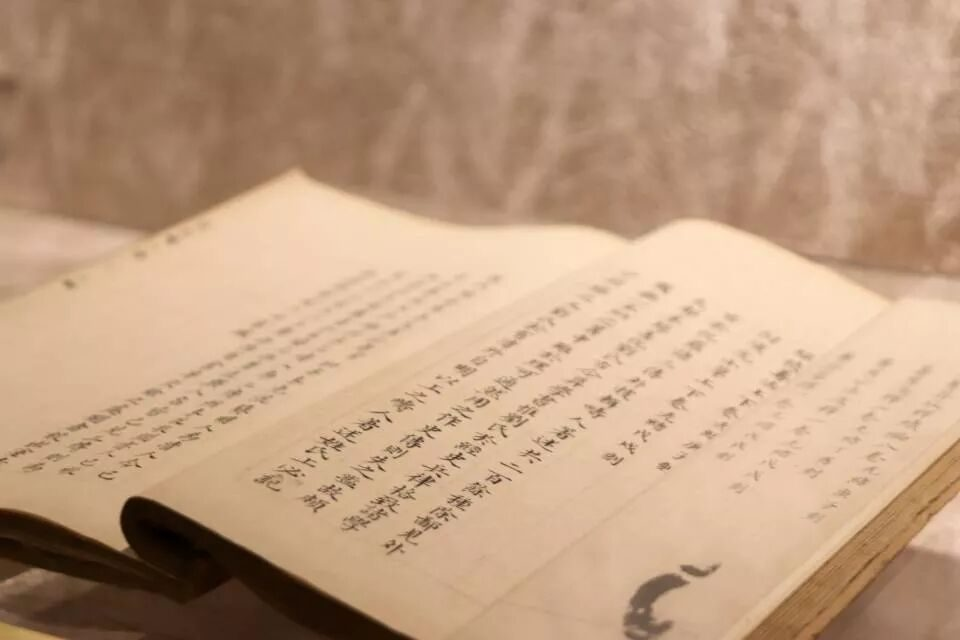
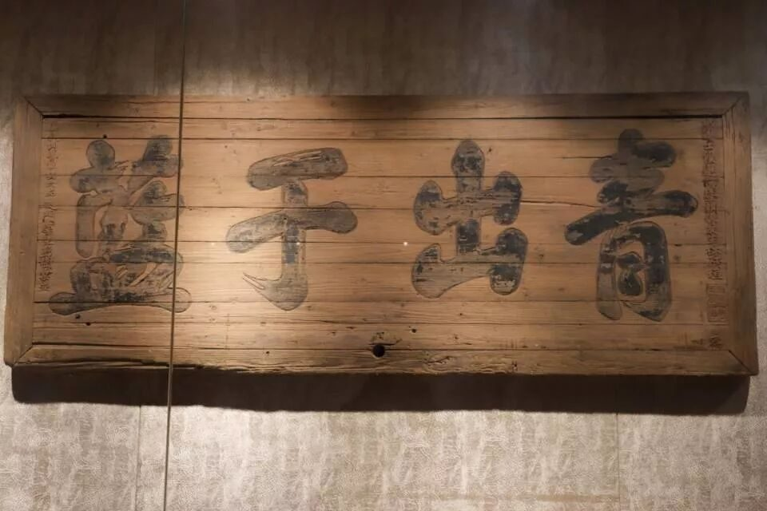
作为湖湘文化的集大成者，岳麓书院代表了湖湘文化的高峰，也为湖南人在中国近代史上的贡献打下了坚实的基础。不仅曾国藩、左宗棠等地主阶级的中兴名臣在此处学习，就连毛泽东等革命进步人士也曾在此旁听，为中国革命打开新的大门。岳麓书院本身涵盖的心忧天下、经世致用、敢为人先等精神是湖南人在中国近代史上大放光彩的一个重要原因，而岳麓书院本身也逐渐的成为了湖湘文化的缩影。
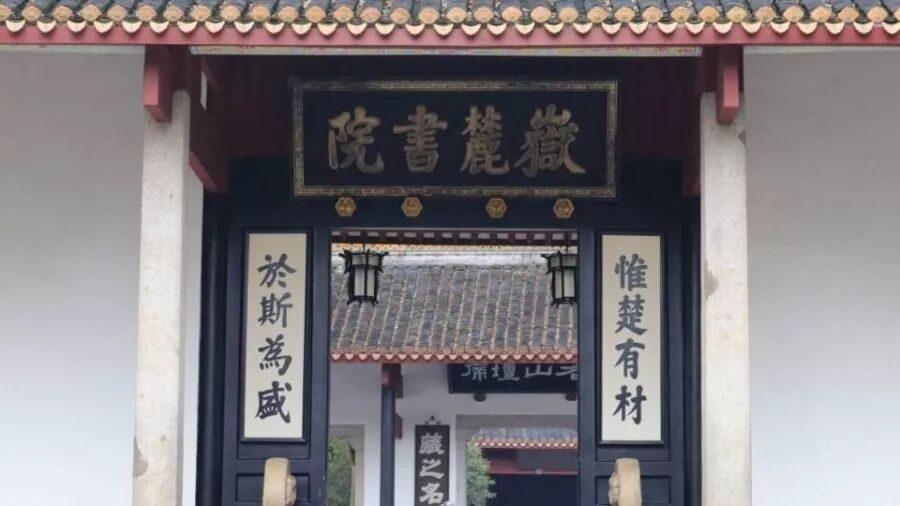
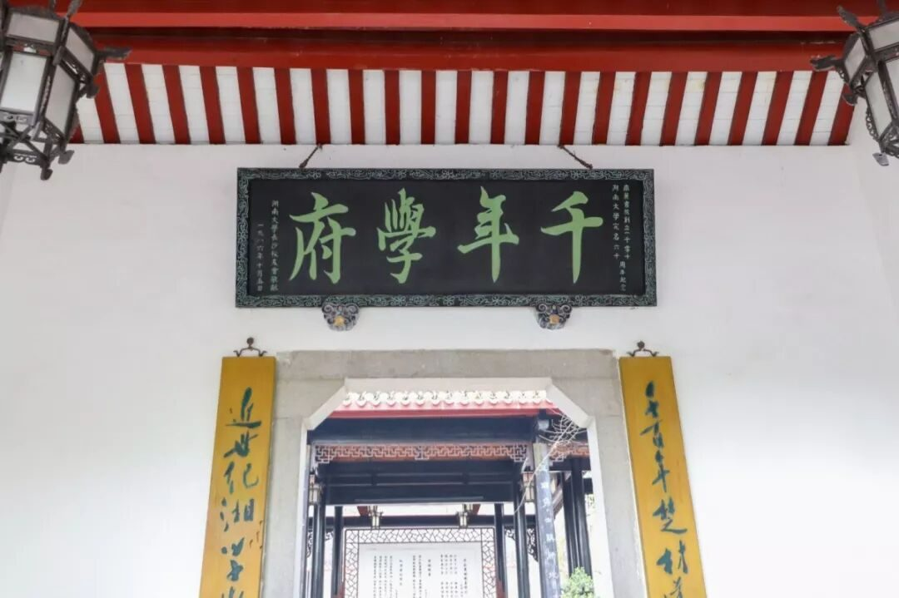
到近代革命时期
湖南地区涌现出了无数的革命英雄
✪曾国藩、左宗棠等传统地主阶级，赢得“中兴将相，什九湖湘”之称；
✪谭嗣同等湖南地区的资产阶级维新派为中国之变革舍生取义；
✪以黄兴、宋教仁、蔡锷等为代表的资产阶级革命派，推翻了封建帝制，打开了中国历史新的一页；
✪尤其以毛泽东、蔡和森、刘少奇等为代表的无产阶级革命派，在中华大地上奔走，宣告着新民主主义革命的胜利，成就了新中国的不朽伟业。
➤就此湖湘精神中的心忧天下、敢为人先、经世致用随着近代革命思想的传播与马克思主义的中国化上升为中华民族的民族精神的一部分，成为中华民族屹立于世界民族之林的重要支柱。而“吃得苦，耐得烦，不怕死，霸得蛮”也随着千年来与卑湿之地和屈辱历史的斗争成为了湖南人形容自己时下意识说出的评价。
湖湘精神
经久不灭
在此次调研中，团队在校内外总共发放了616份调研问卷，其中有效问卷603份，广泛采访当地工作人员及群众，受访者覆盖各年龄段群体、社会各阶层人士，样本选取具有一定的代表性、普遍性，能较为全面客观地反映当前湖湘文化与人文精神认知情况。
{
聚焦实践
我们发现了什么
}
❶“吃得苦，耐得烦，不怕死，霸得蛮”这一句话是几乎所有受访对象对湖南人性子的理解。从数据上来看，也有约七成的受访对象赞同符合类似描述的湖南人的性格，且随着对湖南了解程度的加深，对这句话的认可程度越高。
❷“半部近代史由湖南人写就”是湖南地区妇孺皆知的一句话。从我们的调研结果来看，革命文化作为湖湘文化的重要组成部分，其在公众内的知名度明显高于其他的文化。而在认可度方面，大部分的公众认为革命文化应当辩证看待，持有扬弃的态度。数据显示当代公众对革命文化的正面和积极态度。
❸湖湘文化的公众传播明显不足，景点参观更倾向于打卡式。即使是在岳麓书院所在地的长沙，也仅有约五分之一的人能正确辨别出岳麓书院及岳麓山的代表性景点爱晚亭，而更多人却选择毛泽东故居及橘子洲头等热门景点。
❹湖湘文化传承面临一定困难。我们的调研对象普遍表示，某些文化的过于形式化是湖湘文化传承面临的最大问题。此外，在调研过程中我们明显的感受到湖湘的非遗文化，如湘绣、民间剪纸等，因为缺乏对年轻人的吸引力、传承付出的代价过高等问题已经开始慢慢淡出人们的视野。
Q3:
那湖湘文化究竟是怎样影响湖南的人文精神的鸭？
❖❖首先，湖南的地理因素造就了湖南人本身的“霸蛮”性格。卑湿之地的气候与远离中央政权的客观条件为这里的人民带来了与中原差异明显的“蛮气”，也成为了湖湘文化形成的基础。
❖❖其次，湖南的人才培养模式为湖湘文化的发扬提供了主要推动力。书院不仅促进了湖湘学派的产生与发展、提升了湖湘文化在全国范围内的理论水平，更促进了湖湘文化在湖南内部乃至中国范围内的传播与发展。书院这种独特的教育机构成为了湖湘文化的中流砥柱。
❖❖再次，中央官员的贬谪、江西填湖广等移民潮为湖南地区带来了原本不属于全新的文化。历史上的次次移民为湖南人带来了兼收并蓄的性格，而湖南人将江西人亲切地称呼为“老表”则正是这种文化融合最接地气的证明。
Q4:
那么，我们怎么运用这次的调研结果呢？
⑴ 充分发挥现代高校的时代引领作用。当代大学生作为时代最活跃的一批力量，是最容易产生、接受并实施先进思想的人群。加强高校的建设，引导大学生为“有理想、有本领、有担当”，做新时代的弄潮儿。
⑵ 文化传承方面，我们建议可尝试引导部分非遗建立起现代化企业，做到传承与商业一体化，形成独特的湖湘文化的招牌，那么将使得湖湘文化有更高的知名度，从而让大众对湖湘文化有更深刻、系统的认识。当它有了自己独特的品牌，那么将更加能被年轻人接受，它的传承也将变得轻松许多。
⑶ 不断深化改革开放战略，对外文化兼收并蓄，取之精华去之糟粕，不断为中华文化引入源头活水。
⑷ 将部分过于形式化的文化从高阁上取下，充分“接地气”。调研中我们发现，公众对湖湘文化的人文价值认同感，更多的源自于湖湘文化体现出的普通百姓的性格和人文气质。因此，充分的“接地气”，才更能为这部分文化带来新的生机与活力。
湖湘文化源远流长，又呈现出其多元与包容的一面。而限于时间与能力，团队不能深入地探究湖湘文化对人文精神的更深层次的影响。但我们始终坚信，我们有责任去为文化保护与传承尽微薄之力，对中华文化的传承与发展充满着信心，我们努力着将这份正能量继续传递出去，让华夏精粹在历史长河中永远熠熠生辉，让民族精神代代相传。
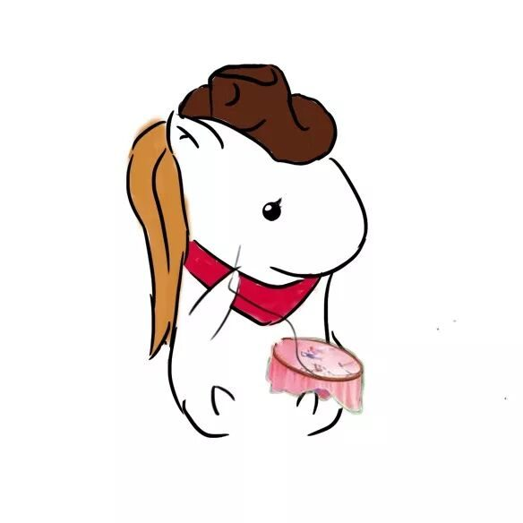
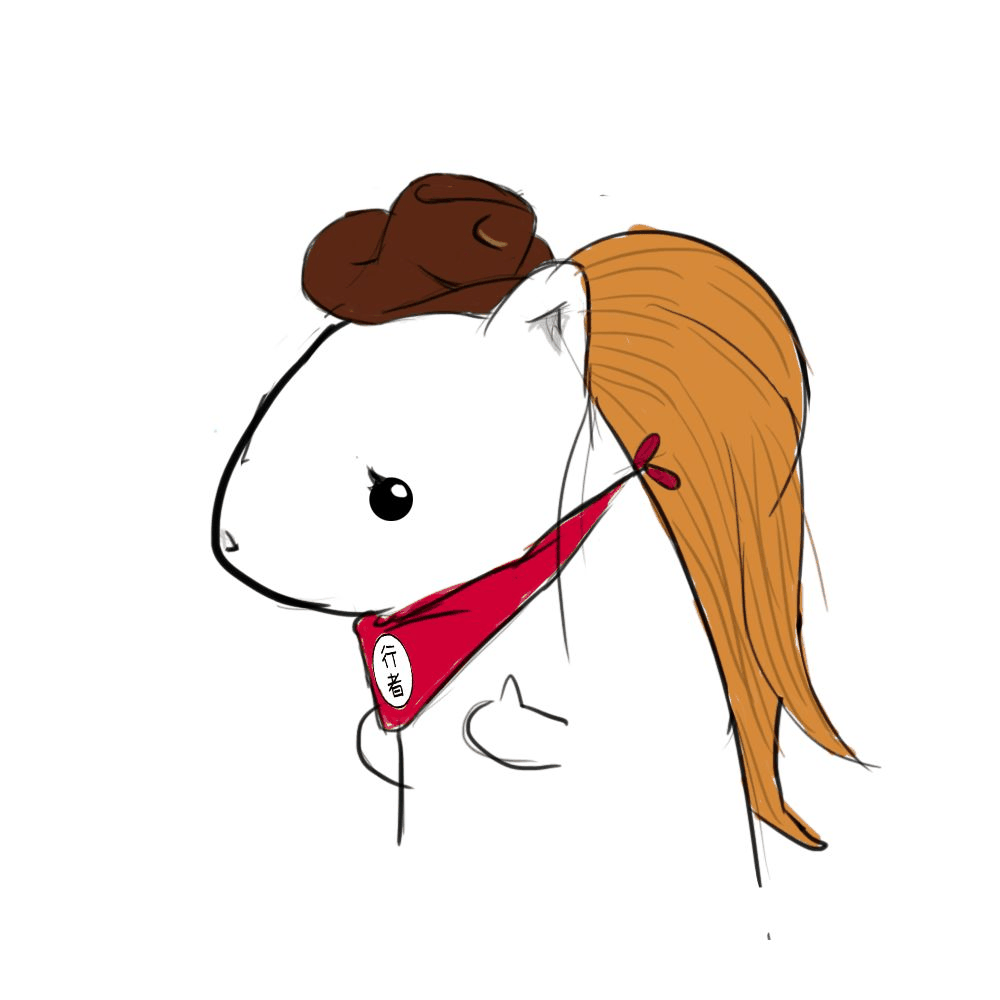
行者无疆
我们从大工启程
向着远方
向着文化
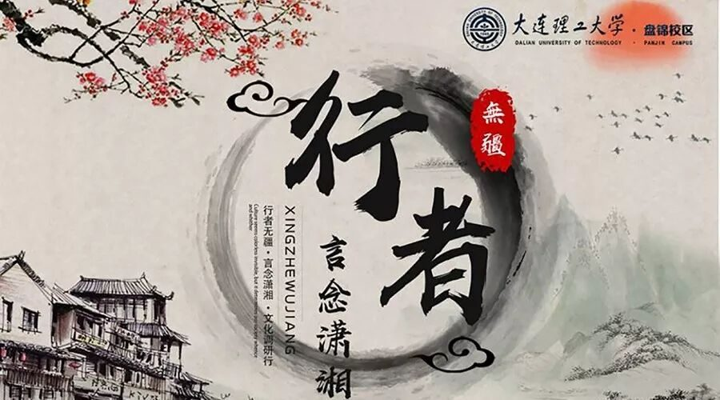
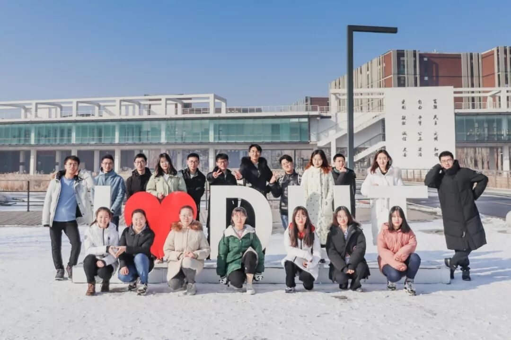
参考：百度百科
@湖湘文化
@岳麓书院
@文化
论文：饶怀民. 近代湖湘文化的源流、结果及其特征[ J ] .
湖南师范大学社会科学学报, 1988(1).
聂素丽. 新媒体时代红色文化传播策略研究[D].湖南师范大学,2015.
杨金鑫: 《湖南历史上人才群体初探》, 湖南师范大学报, 1989 年,第 4 期.
来源 | 行者无疆实践团
文字 | 黄玲 段智然
排版 | 康艳虎
审核 | 段智然 康艳虎 黄玲
行者无疆实践团
QQ：2758025831

随行者一起认识世界
长按二维码